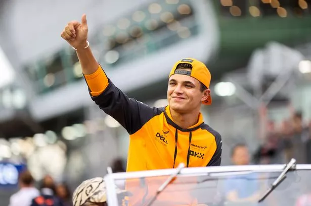
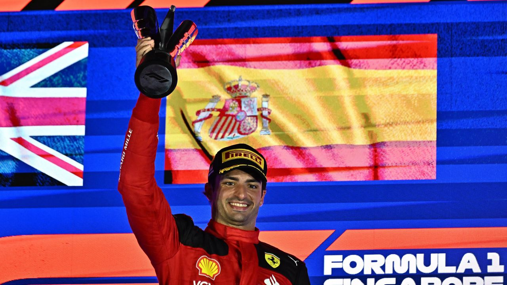

Aktuális hírek a 2023-as Szingapúri nagydíjról:
Lando Norris :2. helyezett
Lando Norris bevallotta, nevetve nézte a Red Bull szingapúri szenvedését Max
Verstappennel együtt…
Legyőzték a Red Bullt! Idén először, de nem egyvalaki. Max Verstappen a gyenge szingapúri időmérő
edzése után az 5. helyig tudott előrekapaszkodni vasárnap a 11. pozícióból, így Carlos Sainz, Lando
Norris, Lewis Hamilton és Charles Leclerc is megelőzte őt. Ezzel véget ért a holland 10 futamos
nyerő szériája, ahogy a Red Bull 15 futam óta tartó veretlenségi sorozata is.
Az RB19-es nem az az autó volt ezen a hétvégén, amit megismertünk az év során. A domináns, minden
pályán és körülmények között működő csodamasina most semmilyen körülmények között nem működött
igazán, és minden volt, csak csodamasina nem.
Carlos Sainz: 1. helyezett
A Ferrari pilótája nagyon okosan versenyzett, ha kellett visszaengedte Norrist egy
másodpercen belülre, hogy ő is nyithassa a DRS-t, így maga mögött tartva a gyorsabb és veszélyesebb
Russellt. Az utolsó körhöz érkezve sem változott az állás, zseniálisan versenyzett Sainz, majd jött
a dráma: Russell besokkalt és belement a gumifalba, így pontot sem szerzett. Végül a Ferrari
spanyolja megnyerte a versenyt, Norris lett a második, Hamilton pedig a harmadik.
Lewis Hamilton: 3. helyezett

Lewis Hamilton az M4 Sportnak elárulta, érzése szerint el tudta volna kapni az első
két helyezettet a szingapúri verseny hajrájában, ha nem állt volna közöttük a csapattársa, George
Russell.
Egy extra kerékcserével kockáztatott a Mercedes a Szingapúri Nagydíj hajrájában. George Russell-lel
és Lewis Hamiltonnal is önként feladták az addigi pozíciójukat a virtuális biztonsági autós fázis
alatt, hogy gumielőnyre tegyenek szert a Ferrarikkal és Lando Norrisszal szemben az utolsó körökre.
Nagy ütemben zárkóztak fel, Charles Leclerc-ren könnyen áthámozták magukat, de Norris végül
megakasztotta őket.
Russell az egyik körben majdnem elment a McLaren mellett, ám honfitársa ügyesen visszatámadott.
Aztán Sainz segítségével DRS-hez jutott, és sikeresen kivédekezte a további köröket, mígnem Russell
az utolsóban a falba állította autóját.
Hamilton a rádión jelezte csapatának, hogy Russellnek gyorsítania kéne, a leintés után pedig az M4
Sport munkatársának, Ujvári Máténak arról beszélt, a csapattársa helyében ő tudott volna előzni, ám
a másik Mercedest nem akarta igazán támadni.